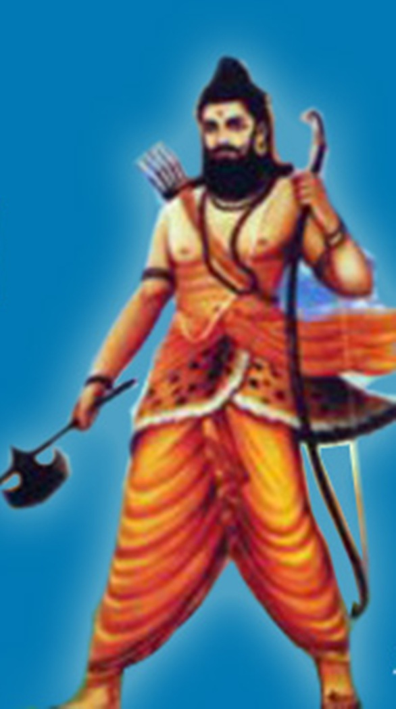

Parasurama Rama with the axe
In PARASURAMA Avatar, Lord Vishnu incarnates himself as a brahman priest in this world. He was brought in this world to avenge all kshatriyas who had become arrogant and were suppressing the brahmans in the world. He was born with unusual physical power, and became better fighter than any Kshatriya.He was born to Jamadagni and Renuka, and belonged to the Brighu clan. Parashurama was always carrying an axe presented to him by Lord Shiva of whom he was an ardent devotee. Kartavirya a powerful king, once went to Jamadagni's home when he was out, and after a meal, stole the Kamadhenu cow, which was supposed to give endless quantity of milk. Jamadgni was enraged and he went and killed the king and brought Kamadhenu back. On hearing this the son of the king came back and killed Jamdagni. Parasurama was enraged at this and went and avenged the death of his father by killing all kshatriyas in 21 battles. His life is story of the supremacy of brahmans over the kshatriyas.